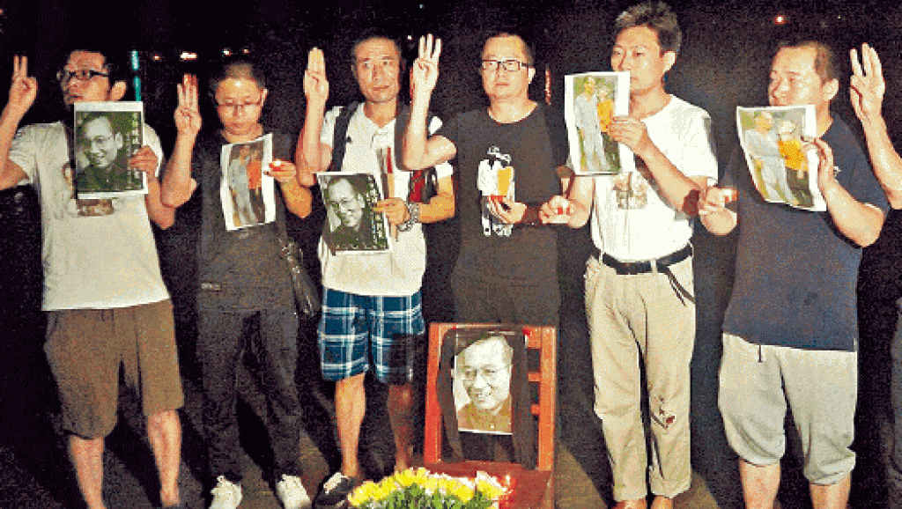

广东纪念刘晓波活动成“涉嫌犯罪” 一名香港媒体司机周末获释
文章来源:http://news.mingjingnews.com/2017/07/blog-post_5778.html
发稿日期:2017/7/31

7月19号参加广东江门市祭奠刘晓波活动部分人士的资料照片 (DR)
自中国2010年诺贝尔和平奖得主刘晓波先生去世后，在广东有十多名当地居民选择在7月19号“头七”时，按照民间习俗于江门市崖门镇海边对他进行了祭奠，
该活动得到了香港有线电视台的同步报道。经介绍在报道播出后，参加了此次活动的6名人士在随后的几天内相继遭到了警方以“涉嫌扰乱社会秩序罪”而逮捕，
另有多人尚处失联状态。他们中一名被带走的在场香港媒体司机于本周末被释放。
据悉，刘晓波先生的去世和“被海葬”引发了全球海内外人士的高度关注和哀悼。在他“头七”的日子里，刘晓波在国内连同海外的支持者们纷纷通过来海边祭奠，
或与“空椅子”拍照等，不同形式对他和他追求的民主中国事业表示追思。他们中特别是有很多生活在中国大陆的人不顾当局反对，
勇敢的把自己举行或参加相关祭奠活动的照片传到了网上。在广东江门市就有十几名人士，因为参加在“头七”对刘晓波先生祭奠活动并在得到香港媒体报道后，
相继被当地警方带走。
到目前为止，他们中共有6人被警方以“涉嫌扰乱社会秩序罪”而遭到刑事拘捕，另有多人处于失联状态。
被警方带走的包含了参与此次报道活动的香港有线电视台的一名名叫李肇强的司机。据介绍，8名便衣于7月26日晚，在没有出示证件或搜查命令的情况下将他带走，
并对该媒体的驻地进行了搜查。李肇强的妻子随后在本周六收到了官方让她去看守所接人的消息，而这一事件同时也引发了香港媒体和社会的高度关注。
另有曾在大连海边于刘晓波被“海葬”地点附近举行祭奠活动的姜建军和王承刚两人，在遭到警方行政拘留10天后于本周末相继获释。
但刘晓波的遗孀刘霞和弟弟刘晖至今仍未回家。
法广RFI弗林